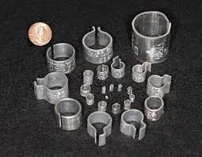
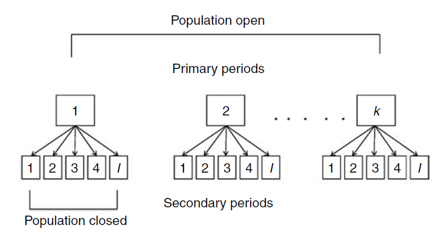

Mark-recapture methods for estimating survival and recruitment
Suppose we mark and release \(R\) individuals, and then recapture \(m\) of them on the second occasion.
How do we estimate survival probability?
If capture probability (\(p\)) was 1, we could use: \[ \hat{S} = \frac{m}{R} \]
But when \(p<1\), \(m\) is some fraction of the number actually alive (\(M\)), so we have to estimate \(p\) and \(M\) to estimate \(S\):
\[ \hat{S} = \frac{\hat{M}}{R} \]
where\[ \hat{M} = \frac{m}{\hat{p}} \]
Purpose
Estimate survival from recovered tags

Benefit
Because hunters are just about everywhere, we don’t have to worry about animals leaving “the study area” and we can estimate actual survival.
Design
Data
Three release years followed by 3 years of recoveries:
| Number released | Period recovered | ||
|---|---|---|---|
| 2-4 | 1 | 2 | 3 |
| \(R_1\) | \(m_{1,1}\) | \(m_{1,2}\) | \(m_{1,3}\) |
| \(R_2\) | \(m_{2,2}\) | \(m_{2,3}\) | |
| \(R_3\) | \(m_{3,3}\) | ||
Parameters
Expected values
| Period released | Number released | Period recovered | ||
|---|---|---|---|---|
| 3-5 | 1 | 2 | 3 | |
| 1 | \(R_1\) | \(R_1f_1\) | \(R_1S_1f_2\) | \(R_1S_1S_2f_3\) |
| 2 | \(R_2\) | \(R_2f_2\) | \(R_2S_2f_3\) | |
| 3 | \(R_3\) | \(R_3f_3\) | ||
Software programs like “MARK” (and “RMark” in R) find the most likely values of \(S\) and \(f\), given the data.
Assumptions
Extensions
Purpose
Estimate survival and capture probability from capture-recapture data
Design
A random sample of animals is marked and followed over many periods (usually years)
Notes
In CJS studies, we ignore the leading zeros in the capture histories because we aren’t interested in how animals enter the sample.
All we care about is survival, so we “condition” on first encounter.
| ar 1 Year | 2 Year | 3 | |
|---|---|---|---|
| Animal 1 | 1 | 0 | 0 |
| Animal 2 | 1 | 0 | |
| Animal 3 | 1 | ||
| Animal 4 | 1 | 1 | 1 |
| Animal 5 | 1 | 1 |
Estimation is accomplished by finding the values of \(p\) and \(\Phi\) that best align the expected values with the observed capture histories.
| pture history Ex | pected values |
|---|---|
| 111 | \(\Phi_1p_2\Phi_2p_3\) |
| 110 | \(\Phi_1p_2(1-\Phi_2p_3)\) |
| 101 | \(\Phi_1(1-p_2)\Phi_2p_3\) |
| 100 | \((1-\Phi_1)+\Phi_1(1-p_2)(1-\Phi_2p_3)\) |
| center> |
Assumptions
Model can be extended to accommodate variation due to…
Purpose
Estimate survival, recruitment, abundance, and capture probability from capture-recapture data
Design
Randomly sample the population during every period and mark all newly captured unmarked animals
Examples
Recruitment in JS models is defined as the per-capita rate at which new individual enter the population.
If immigration is not possible, recruitment is equivalent to fecundity.
Note that in other applications, recruitment is defined as the product of the birth rate and the probability of surviving to maturity.
We no longer “condition” on first encounter – Instead, we use all the data.
The leading zeros provide information about when individuals are recruited into the population
| ar 1 Year | 2 Year | 3 | |
|---|---|---|---|
| Animal 1 | 1 | 0 | 0 |
| Animal 2 | 0 | 1 | 0 |
| Animal 3 | 0 | 1 | 1 |
| Animal 4 | 1 | 1 | 1 |
| Animal 5 | 0 | 1 | 1 |
Assumptions
The standard JS model doesn’t work very well, but it is extremely powerful when combined with the robust design.
Purpose
Relax assumptions and increase precision by collecting more data
Key concept
We now have two types of sampling periods:
Primary sampling periods} between which the population is assumed to be demographically open
Secondary sampling periods over which the population is assumed closed
The replicate surveys with each primary period give us direct information about capture probability, which makes it easier to estimate the other parameters.

Example with 2 primary periods and 3 secondary periods
| Primary period 1 | Primary period 2 | ||||||
|---|---|---|---|---|---|---|---|
| 2-4 | Day 1 | Day 2 | Day 3 | Day 1 | Day 2 | Day 3 | |
| Animal 1 | 0 | 0 | 1 | 1 | 0 | 0 | |
| Animal 2 | 1 | 0 | 1 | 1 | 1 | 1 | |
| Animal 3 | 0 | 0 | 0 | 1 | 0 | 0 | |
| Animal 4 | 1 | 1 | 1 | 0 | 0 | 0 | |
| Animal 5 | 0 | 0 | 0 | 1 | 1 | 0 | |
:::
| thod Da | ta Su | rvival Re | cruitment Ab | undance |
|---|---|---|---|---|
| Tag recovery | Recoveries | Yes | No | No |
| CJS | Mark-recap | Yes[^1] | No | No |
| JS | Mark-recap | Yes\(^1\) | Yes | Yes |
Each of these three methods is widely used in practice. The best option depends on the objectives.